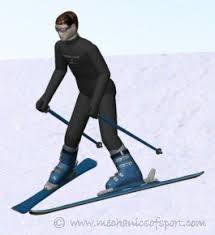

How to Stop
The Snowplough method The snowplough method is usually one of the easiest methods and most common ones taught to begginers. Make sure to start by practising on flat ground and getting used to the feeling of being in a snowplough position. Point your toes towards each other and push your feet apart to rotate your skis into a wedge-shaped position and it should be like a pizza. Make sure that your body is in a balanced position with your shoulders forward so it is more efficent.
Snowplough Method